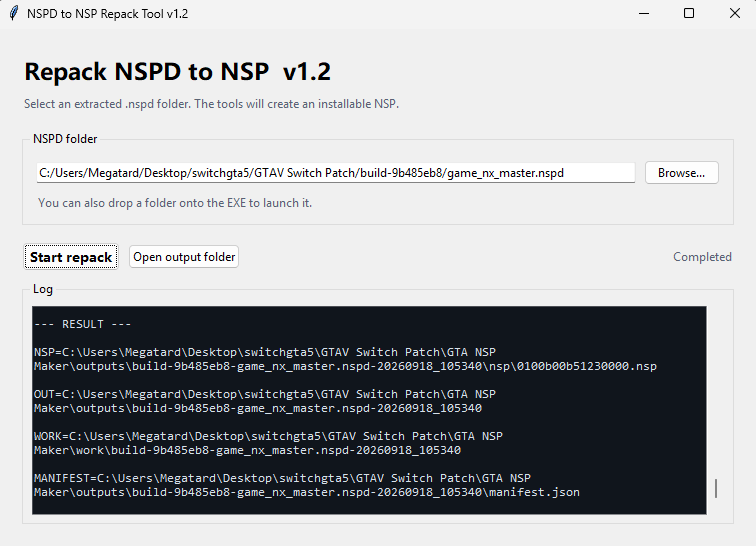
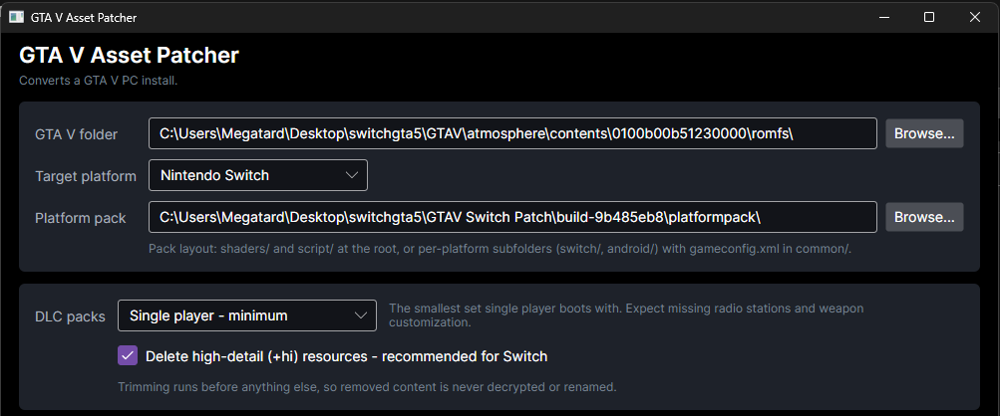
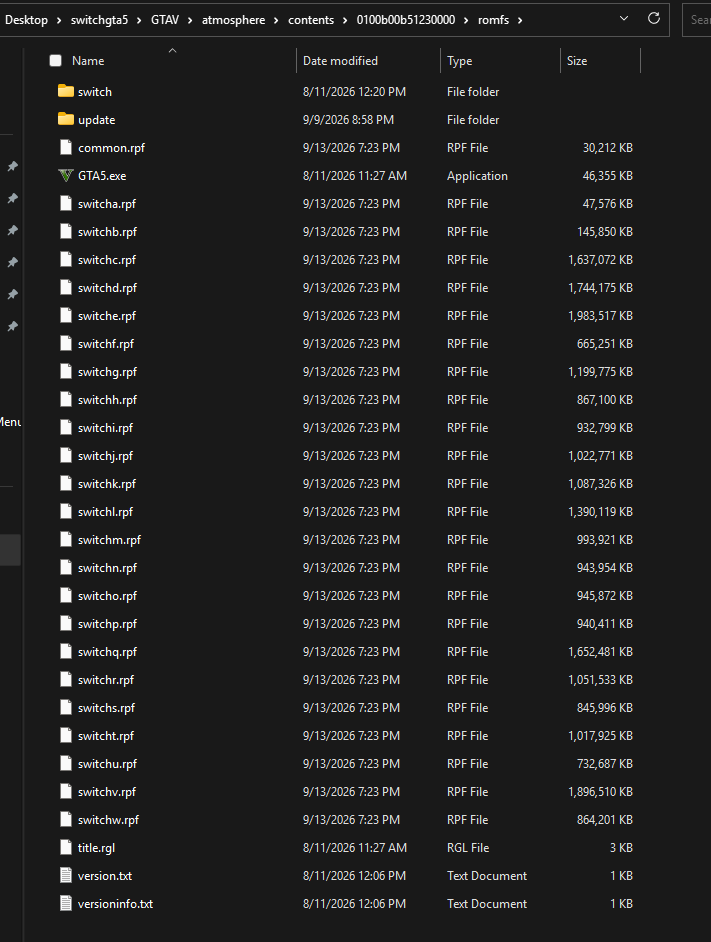
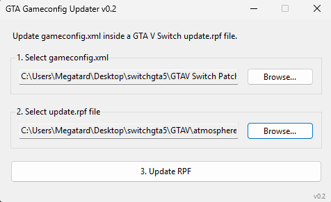
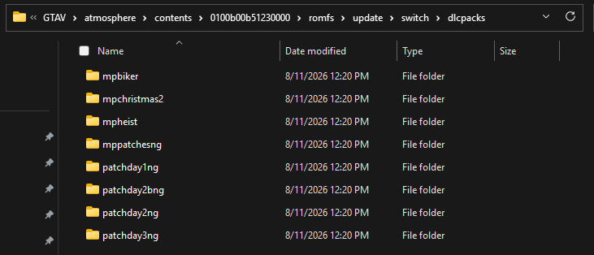

Build & setup
Installing the GTA V Switch port
This walks you through turning a any GTA V Legacy PC install into an NSP you can put on your Switch, from the first download to the first boot. Read a step fully before doing it; most install problems come from skipping the cleanup steps.
What you'll need Grab all of these before you start
-
GTA V Patcher gtav-patcher-4.00.7zDownload
-
Download
update.rpf&update2.rpfUpdate.zip -
Latest patch build build-9b485eb8.7zDownload
-
NSPD → NSP Repack Tool nspd-repack-tool v1.2Download
-
An NSP/XCI/NSC installer Nut, Awoo Installer, or DBi — pick oneGet one
Have your own copy of the GTA V Legacy PC game files saved somewhere. The patcher edits a copy of these files; it doesn't download the game for you. You do not need to use a specific game build for this.
1 · Build the installable NSP
-
Extract
build-9b485eb8.7zsomewhere, then openNPSDRepackGUI.exe. -
Click Browse, go into the extracted
build-9b485eb8folder, and select thegame_nx_master.nspdfolder. -
With
game_nx_master.nspdselected, press Start repack. -
When it finishes you'll get an
outputsfolder containing your NSP. Use the app's Open output folder button to jump straight there.outputs\build-9b485eb8-game_nx_master.nspd-20260909_143107\nsp\0100b00b51230000.nsp

.nsp landed.
2 · Patch your game files
-
Extract
gtav-patcher-4.00.7z, open thewin-x64folder, and launchGTAVPatcher.exe. -
Next to GTA V folder, browse to the GTA V install you want to patch.
-
Next to Platform pack, select the
build-9b485eb8\platformpackfolder. -
Set DLC packs to Minimum and make sure Delete high-detail (+hi) resources is checked.
-
Click Patch and let it run.

Let the patcher run to completion; closing it early leaves you with a half-patched folder you'll need to redo from scratch.
Clean up the patched folder
Once patching finishes, open your patched GTA V folder and delete every
.dll and .exe file except GTA5.exe,
along with anything Rockstar-related. You should be left with exactly this:
Trim the DLC packs
Open the following folder and remove DLCs down to the 8 that boot reliably. This is the single most common crash cause; don't skip it.
GTA5\update\switch\dlcpacks
Don't delete the other DLC folders outright if you can help it; cut and paste them somewhere safe instead. The tab covers which extra packs are safe to add back in, and how.
3 · Install it on your Switch
-
Copy your
.nspanywhere onto your SD card and install it with Awoo Installer or DBi. -
On the SD card, create the folder path:
atmosphere\contents\0100b00b51230000\romfs
-
From your patched GTA V folder, copy everything inside its
romfsfolder into the one you just made on the SD card.

Launch the game from your Switch's home menu. If it boots to the title screen, you're set.
Keeping it current
Updating the game
What you need to redo depends entirely on what the new patch actually touched. Check which case you're in before you start deleting things.
Case 1 - Only gameconfig.xml changed
This is the lightest update. You only need the GTA5SwitchGCUpdater tool.
-
Open the updater. Next to Select gameconfig.xml, browse to the new gameconfig file from the update.
-
Next to Select update.rpf file, browse to the
update.rpfinside your patched GTA V folder'supdatedirectory. -
Press Update RPF and choose where to save the result.
-
Copy the new file over the one on your SD card:
SWITCHSD\atmosphere\contents\0100b00b51230000\romfs\update\update.rpf

update.rpf.
Case 2 - The platform pack changed
Repeat the from the Installing tab, but you can skip the DLC deletion and the file cleanup; that part doesn't need to be redone for a platform pack update.
If the update is a big one, you'll get the most reliable result by starting over completely: fresh GTA V Legacy PC files, and the full setup from the Installing tab, rather than patching on top of what's already there.
Case 3 - Updating the NSP
If you need to update the base install container itself, you will need to repack a fresh version. Head back to the step on the Installing tab to generate a new NSP file, then install it over your existing game on your Switch.
When updating the main NSP container, make sure to use your installer (Awoo or DBI) to overwrite or update the existing title cleanly so your save data remains intact.
Controlled additions
Adding more DLCs safely
The base install strips almost every DLC down to 8 so the game boots reliably. Plenty of other packs are known to work fine; you just add them back deliberately, one at a time, instead of restoring everything at once.
DLCs confirmed to work
These have been tested on top of the 8 required packs without crashing:
Packs not listed here haven't been confirmed. Adding an untested one is the most likely way to bring the crashing back; try it on a spare SD card or back up your saves first.
If you haven't installed yet: keep them or toss them
Back on the trimming step in Installing, you had two options for the DLCs you removed:
Option 1 - Delete them
Simpler. Fine if you only care about the 8 required packs and don't plan on adding more later.
Option 2 - Cut and paste them elsewhere
Keeps every original DLC folder sitting in a spare directory on your PC, ready to copy back in whenever you want one from the confirmed-working list above.

Adding a pack back in
Where you add it depends on whether you've already built your NSP.
Haven't installed yet
-
Before repacking, copy the DLC folder (e.g.
mpluxe) from wherever you saved it into:GTA5\update\switch\dlcpacks
-
Continue with the rest of the install as normal; the pack will be baked into your NSP.
Already installed and playing
-
The Switch reads these DLC folders directly off the SD card, so you don't need to rebuild the NSP. Copy the DLC folder straight into:
atmosphere\contents\0100b00b51230000\romfs\update\switch\dlcpacks
-
Launch the game and confirm it still boots before adding a second pack.
Drop in a single new pack, boot the game, and confirm it's stable before adding the next one. If something you added does cause a crash, removing that one folder again is all it takes to get back to a working state.
Diagnostics & fixes
Error Reasons & Troubleshooting
Running into installation failures or boot crashes? Most issues stem from outdated system patches, un-trimmed DLC folders, or missing files in your RomFS directory. Check the cases below for your fix.
Case 1 — Can't install the NSP with any installer
If Tinfoil, DBI, Awoo, or Nut all fail to install your generated NSP with signature or version errors, your Atmosphere system patches are out of date.
You need to update your system patches. Download and install the latest version from the impeeza/sys-patch repository, then reboot your Switch.
Case 2 — Crashes at splash screen or on 2 stars
If the game boots to the Nintendo Switch splash screen and immediately crashes, or hangs and crashes right when the two stars appear during pre-loading, it is caused by one of two common mistakes:
-
Untrimmed or bad DLC packs: You didn't delete the extra DLC packs, or you added a pack that isn't compatible with this build. Head back to the to strip your DLC folder down to the required working packs.
-
Incomplete RomFS copy: You failed to copy every single game file from your patched PC folder into the correct RomFS directory on your SD card. Every file and folder (including the
switchandupdatefolders and allswitch*.rpffiles) must be present.atmosphere\contents\0100b00b51230000\romfs
Double-check that your SD card layout matches the guide precisely. Nearly all boot crashes are solved by verifying your romfs contents and trimming unsupported DLCs.
Additional downloads
Extras & Custom Tools
Valueable utilities for the end-user to make their GTA V Switch experience more enjoyable. These are not required for the base install, but they can enhance your gameplay or make modding easier.
RPF Radio Editor Manage custom radio audio tracks
A companion tool designed for editing and managing radio station audio containers inside GTA V RPF files. Full usage guidelines, prerequisites, and instructions are detailed directly in the project's repository readme. It auto converts your non .wav music files to the required format if needed.
-
RPF Radio Editor Repository GitHub project & documentation readmeView GitHub
MEGATARD Switch Mod Menu Custom in-game mod menu for GTA V Switch
A lightweight mod menu built using RAGE Scripting Engine and compiled into uncompressed raw .nsc script files. It is designed to drop directly into your game's script container path for easy in-game access.
-
MEGATARD Switch Mod Menu v0.8 Contains "Easy" & "Hard" method install zips, plus a feature list for that version.Download
-
MEGATARD Switch Mod Menu SDK GitHub source repository and development kit.View GitHub
If you want all the DLC vehicles, weapons, mods, clothes, and locations, download the all working dlcs.zip package and add whatever you don't have here:
atmosphere\contents\0100b00b51230000\romfs\update\switch\dlcpacks
Report any bugs or submit feature requests to Discord handle @Geekmaxxer.
Easy Way to Install the Mod Menu
-
Go to your GTA 5 Switch files or Switch SD card directory.
-
Go to the update path:
atmosphere\contents\0100b00b51230000\romfs\update
-
Replace
update2.rpfwith the one you just downloaded (keep a backup of your old one just in case).
Experienced Way to Install the Mod Menu
-
Open your RPF Editor (OpenIV / CodeWalker).
-
Load the
update2.rpfarchive either directly from your SD card with a reader or copy it over then load it. -
Navigate to the internal script container path:
update2.rpf\switch\levels\gta5\script\script_rel.rpf
-
Drag
achievement_controller.nsc,ragemenu.nsc, &shop_controller.nscinsidescript_rel.rpfwith Edit Mode turned on. -
Then go to your SD card with USB-FT or a reader and replace the
update2.rpfin:atmosphere\contents\0100b00b51230000\romfs\update